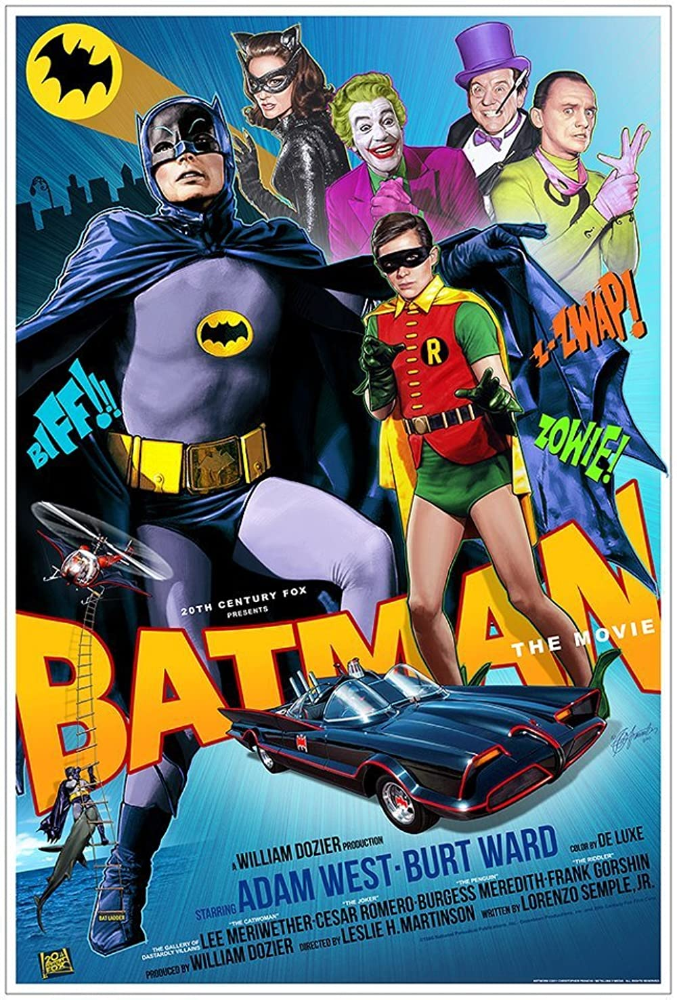
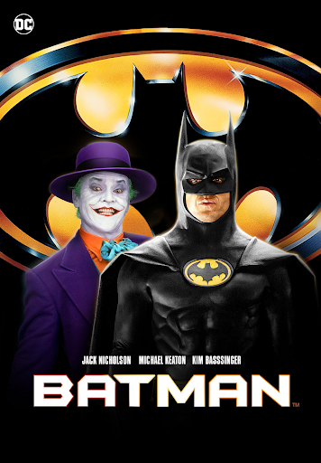
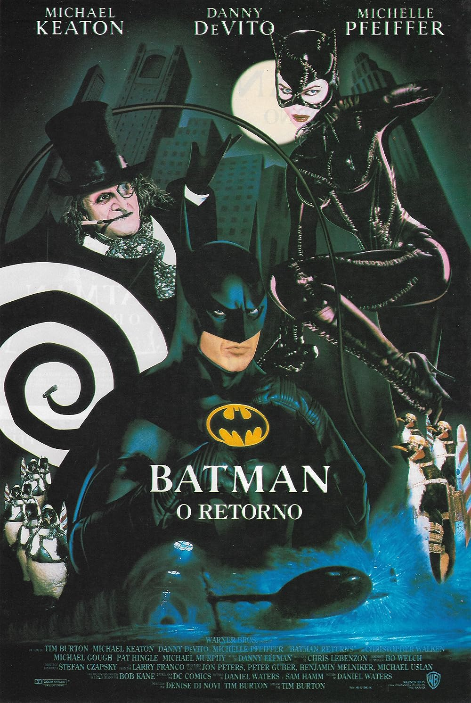
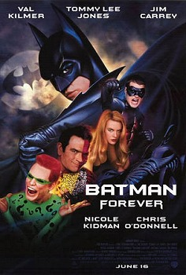
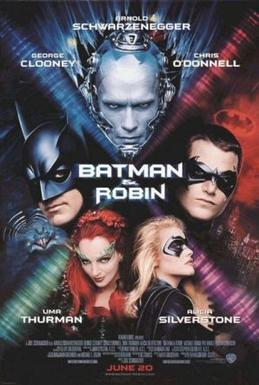
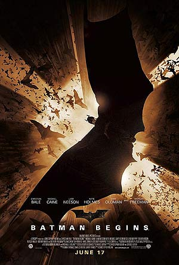
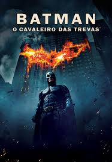
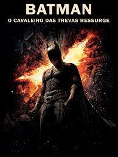

Batman: O Filme (1966)
Primeira adaptação cinematográfica do herói,
baseada na série de televisão dos anos 60.

Batman (1989)
Dirigido por Tim Burton, mostra o confronto
entre Batman e o Coringa.

Batman: O Retorno (1992)
Batman enfrenta o Pinguim e a Mulher-Gato
em Gotham City.

Batman Eternamente (1995)
Batman enfrenta dois novos inimigos, Duas-Caras e Charada,
enquanto lida com a chegada de Robin como seu parceiro.

Batman e Robin (1997)
Ao lado de Robin e Batgirl, Batman precisa impedir os planos
do Sr. Frio e da Hera Venenosa para salvar Gotham City.

Batman Begins (2005)
A origem do Cavaleiro das Trevas é contada, mostrando o
treinamento de Bruce Wayne e o surgimento do Batman.

O Cavaleiro das Trevas (2008)
Batman enfrenta o Coringa, um criminoso imprevisível que
ameaça mergulhar Gotham City no caos.

O Cavaleiro das Trevas Ressurge (2012)
Após anos afastado, Batman retorna para enfrentar Bane,
um poderoso inimigo que coloca Gotham em grande perigo.

The Batman (2022)
Um jovem Batman investiga uma série de assassinatos ligados
ao Charada e descobre segredos obscuros de Gotham City.